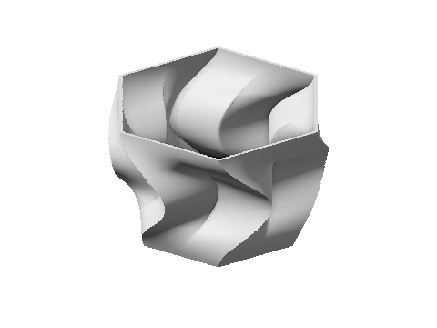

Coming from OpenSCAD
Drafted with AI, not yet reviewed
Most of an OpenSCAD design ports line by line. This chapter lists what each construct becomes, and what works differently.
What is different
- A model is one field, evaluated wherever it is needed.
There is no
$fn: surfaces are smooth at any zoom, and facets appear only at export, at the mesh’s resolution. - Offsets, shells, fillets and clearances are a few operations on an exact field, in 3D as in 2D. They need the field to be a distance, so the manual says for every function how exact its field is; see Exact distances and bounds.
- A mesh knows its extent, but a field does not.
The extent is found by interval arithmetic, and a field that hides it needs
bounds. - Shapes are centred on the origin, along Z too, where OpenSCAD’s
cubeandcylinderstand on z = 0 by default. cylinder(r, h)takes the radius first, and OpenSCAD’scylinder(h, r)the height.- OpenSCAD reads inside out:
translate(v) rotate(a) shape();. A chain of methods reads in order:shape.rotate_xyz(a).move(v). - Copies placed by a
forloop cost one each. A fold of space, as therepeatfunctions make, costs one copy for all of them. - Numbers that get divided should be floats: Rhai’s
5 / 2is 2. - The
E = 0.01overlaps are unnecessary: coincident faces do not flicker in a field. Cutters still need to reach past the material, or a skin of zero thickness can remain.
OpenSCAD’s constructs
Transforms are methods on the shape they apply to.
| OpenSCAD | keycap |
|---|---|
cube(s, center = true) |
cuboid(s) |
cube([a, b, c]) |
cuboid([a, b, c], #{anchor: [-1, -1, -1]}) |
cylinder(h, r = r, center = true) |
cylinder(r, h) |
cylinder(h, r), cylinder(h, r, $fn = 6) |
cylinder(r, [0, h]), cylinder(r, [0, h], #{sides: 6}) |
cylinder(h, r1, r2) |
cone([r1, r2], [0, h]) |
sphere(r) |
sphere(r) |
circle(r), circle(r, $fn = 6) |
circle(r), regular_polygon(6, r) |
scale([a, b]) circle(1), sphere(1) |
ellipse([a, b]), ellipsoid([a, b, c]) |
square(s, center = true) |
rect(s) |
square([a, b]) |
rect([a, b], #{anchor: [-1, -1]}) |
polygon(points) |
polygon(points), or rounded_polygon for round corners |
polygon of several paths, holes included |
polygon([outline, hole, ...]) |
union(), difference() of polygons |
points::union(a, b), on their points |
rotate_extrude() polygon(points) |
revolve(points) |
polyhedron(points, faces) |
none; see Porting point-layer and polyhedron designs |
translate(v) |
move(v) |
rotate([a, b, c]), rotate(a) |
rotate_xyz([a, b, c]), rotate_z(a) |
rotate(a, v) |
rotate(#{axis: v, angle: a, center: [0, 0, 0]}) |
mirror([1, 0, 0]) |
reflect_x() |
children(); mirror([1, 0, 0]) children(); |
symmetric_x() |
scale(k) |
scale_exact(k); scale_bound([a, b, c]) when not uniform |
union() { a; b; } |
union(a, b) |
difference() { a; b; c; } |
difference(a, union(b, c)) |
intersection() { a; b; } |
intersection(a, b) |
linear_extrude(h, center = true) |
extrude(h) |
linear_extrude(h) |
extrude([0, h]) |
linear_extrude(h, twist = t, scale = k) |
extrude([0, h], #{twist: -t, scale: k}) |
rotate_extrude() |
revolve() |
rotate_extrude(angle = a), with $fn = n |
revolve(a), revolve(a, #{sides: n}) |
offset(r = d) |
offset(d), on an exact field |
offset(delta = d) |
polygon(points::miter_offset(points, d)) |
offset(-r) offset(r), closing |
rounded_polygon(points, 0, #{concave: r}), or union_round |
offset(r) offset(-r), opening |
rounded_polygon(points, r, #{concave: 0}), smooth_difference |
minkowski() { s; sphere(r); } |
offset(s, r), on an exact field |
minkowski() with a cone or a cylinder |
a rim: extrude(h, #{chamfer: c}), #{round: r} |
hull() of two circles or spheres |
stroke([a, b], 2 * r), capsule(a, b, r) |
hull() of anything else |
none; see below |
projection(cut = true) |
the slice at z = 0: remap(s, x, y, 0.0 * x) |
projection() |
none |
text(t, size = s, font = "F:style=Bold") |
text(t, #{size: s, font: "F:style=Bold"}) |
import("file.svg", center = true) |
svg("file.svg", #{center: true}) |
import("file.stl") |
none |
$fn, $fa, $fs |
none; resolution sets the export’s mesh |
module m() { ... children(); } |
a fn taking shapes as arguments |
for (i = [0 : n - 1]) translate(i * v) |
linear_array(v, n), or a Rhai for collecting into an array |
nested for loops of smaller copies |
a fold per level: repeat_polar, repeat, recurse, or mirrors |
sin(a), cos(a), atan2(y, x) |
sind(a), cosd(a), atan2d(y, x) |
color("red") |
draw_rgb(s, 1, 0, 0) |
% and # modifiers |
Reference geometry |
include, use |
import "file" as m; |
assert(c, msg) |
if !c { throw msg; } |
echo(...) |
print(...) |
linear_extrude(twist = t) of an offset circle |
helix(circle(r), radius, pitch) |
point layers stitched into a polyhedron |
loft, or keyframes of z and normalize_z |
| point layers on tilted planes, as keycaps have | loft_tilted(profile, top, tilt) |
| a profile carried along a path of points | sweep |
| a strand built ring by ring round a ring | helix, then bend |
a Bézier curve’s points stroked as a polygon |
bezier_stroke(points, width) |
| an involute traced point by point | involute_gear(teeth, m) |
linear_extrude’stwistturns clockwise looking down, andextrude’s anticlockwise, hence-t.hull()has no counterpart: a convex hull is made from a shape’s points, and a field has none to list. Write the hull’s outline as points forpolygon, or usestroke,capsuleorrodwhere the hull is of round ends.projection()withoutcutwould need the field’s minimum along Z, which has no closed form; slice instead.- Opening and closing in one step,
offset(-r) offset(2 * r) offset(-r), isrounded_polygon(points, r). On an SDF, offsetting twice does nothing:offset(offset(s, -r), r)issagain. For a shape that is not a polygon, cut the cutters away withbody.smooth_difference(cutters, 2.0 * r);knob.keycapdoes this, within about 0.6 mm of OpenSCAD’s result.
Text, imports and exports
text’ssizeis OpenSCAD’s, and fonts are named as OpenSCAD names them, with Liberation Sans by default. OpenSCAD 2021.01 places letters by metrics 1/1.024 of the font’s, 2.3% tighter than its design; keycap does the same, so labels fit where they fitted.svgfills paths as OpenSCAD does, even-odd for a path without a fill, andcenteris OpenSCAD’scenter = true.- A 2D export traces outlines into lines and arcs: the first leg of
laptop-stand.keycapexports as 7 lines and 23 arcs, within 0.0011 mm of OpenSCAD’s own export at$fn = 360, which has 4078 lines.
Most of the examples are ports of OpenSCAD designs, commented where the translation is not literal; a header that says how its port was checked gives the distance from the original.
Porting point-layer and polyhedron designs
OpenSCAD’s richest designs compute their own geometry: layers of points stitched into a polyhedron, curves sampled into a polygon, copies placed by nested loops.
The points come from some maths: a profile that changes with height, a curve, a sweep.
Porting such a design means writing that maths as a field, without the points.
It says what the shape is at every point, so there is no resolution to choose, and offsets and shells work on the result as on any exact shape.
Profiles that change with height
A vase built from point layers is a 2D outline whose parameters change with the layer. Its field:
- Make the layer index a coordinate: usually
z, throughlinstep(z0, z1, z), thetfrom 0 to 1 that OpenSCAD’s layer loops run over. - Write the outline as an exact 2D field whose parameters are trees of it.
keyframesand the easings give the schedules.starwith an inner radius that is a tree interpolates the points of two outlines whose corners pair up, such as a hexagon and a hexagram.lerpblends two unrelated outlines as fields. - Apply the layer’s transform to the coordinates, inverted.
An outline scaled by
k(z)and turned bya(z)is evaluated at the point turned by-a(z)and divided byk(z), and its field multiplied byk(z)to stay in true units. - Correct the slope.
A field that is exact within every slice measures across the slice, and on a leaning or turning wall the distance square to the wall is shorter.
normalize_zdivides bysqrt(1 + (df/dz)^2), which makes it that distance to first order: exact for a straight leaning wall, and close for a curved one. - Cut the ends.
loft does steps 3 to 5 for a list of key slices, and extrude’s twist, scale and move options for one profile.
A vase that turns from a hexagon into a hexagram and back as it rises, shelled 1.2 thick.
let inner = keyframes(z, [ [0, 0.866], [25, 0.577, "in_out_cubic"], [50, 0.866, "in_out_cubic"], ]); let vase = loft([ #{z: 0, shape: star(6, [1.0, inner]), scale: 30}, #{z: 25, angle: 30, ease: "in_out_sine"}, #{z: 50, angle: 0, scale: 40, ease: "in_out_sine", ease_scale: "out_quadratic"}, ]); vase.shell(1.2).intersection(z - 48.8)

The shell’s wall is 1.2 mm square to the surface everywhere. A wall offset in 2D before extruding, as OpenSCAD would make it, is 1.2 mm across each layer, and thinner wherever the wall leans or turns. Between outlines whose points do not pair up, a field blend draws slightly different in-between outlines than the points did: rounder, and without the creases where the points’ paths cross.
Sweeps, helices and rings
- A profile extruded with a twist is the profile evaluated at the point turned back by the twist.
For a helix,
helixmeasures square to the wire instead, which keeps a round wire round, where a twisted extrusion flattens it on steep helices. - Something wound round a ring is built straight along Z and bent with
bend. A pattern that repeats a whole number of times round the ring closes without a seam. - A profile moved along a path of lines, arcs and helices is a
sweep.
Copies placed by loops
- When each copy is the same piece moved, the loop becomes a fold: the copy’s index comes from the coordinates with
round, its transform from the index, and one copy is evaluated at the transformed coordinates. Every copy is then a rigid motion of one, so the field stays exact, at the cost of one copy;dna-loop.keycapturns each rung with the helix this way. - A fractal of nested loops, each placing smaller copies round the last, is a fold at every level, as
recursemakes it: one copy per level, whatever the count. Folding by mirrors costs less thanrepeat_polar’s trigonometry for shapes symmetric about their axis;vase-koch.keycapfolds its snowflake that way.
Curves and closed forms
- A curve sampled into a polygon, a Bézier stroke for instance, is
bezier_stroke: the distance to the curve itself, smooth at any zoom, tapering by a function oft. - A curve with a known distance needs no points at all.
An involute’s normals are tangents of its base circle, so its distance is the base radius times an angle, and
involute_geardraws both flanks of every tooth from the gear’s four numbers.
The examples vase-interpolate.keycap, vase-koch.keycap, gear-involute.keycap, dna-loop.keycap and feather.keycap are ports of such designs.